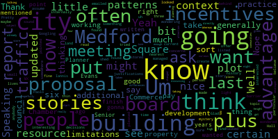
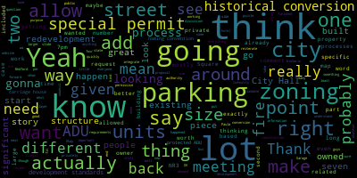

[Unidentified]: Test one, two.
[Collins]: due to some key players being stuck in traffic. So apologies for the wait. We will be getting going as soon as we can, hopefully in just 10 minutes or so. Thank you for your patience. stuff that only Anna's can speak to. There will be a meeting of the Medford City Council Planning and Permitting Committee, April 30, 2025. This meeting will take place at 6.15 p.m. in the City Council Chamber, second floor, Medford City Hall, 85 George V. Hassett Drive, Medford MA, and via Zoom. Mr. Clerk, please call the roll.
[Adam Hurtubise]: President Bears? Present. Councilor Callahan?
[Collins]: Present.
[Adam Hurtubise]: Councilor Leming? Present. Councilor Scarpelli?
[SPEAKER_05]: Present.
[Adam Hurtubise]: Vice President Collins?
[Collins]: Present. Five present, zero absent. The meeting is called to order. Thank you for bearing with us. Everybody, there was bad traffic on 93, hence the slightly late start. Thank you very much all for your patience. The action discussion item for this committee meeting is, as it almost always is, Paper 24-033, Zoning Ordinance Updates with the Innes Associates team. This is the 24th Zoning Updates project meeting with Innes Associates. Tonight, we will be discussing Upcoming meetings and public Q and A's. We have a few new ones to announce and promote. Updates to the draft Medford Square zoning proposal, updates to the draft West Medford Square zoning proposal, a review of other upcoming zoning topics and updates from now through the end of the year. and other updates as NS associates and city staff and councillors see fit. With that, Paola, unless you need more time to get settled, I'll pass it to you.
[Paula Ramos Martinez]: Hello, thank you. This seems very loud. Thank you very much. Sorry, the traffic was crazy. I'm going to share the presentation that we have. There we go. So, um, as we usually do, we will talk about the process timeline, what is planned for the 2025, the opportunities for public comments, and we will look into the squares, Medford Square, West Medford Square, and then a little bit about the ADUs. So today we're looking at the squares, we will look in the next ones at other corridors, we're in the commercial framework, we did the residential neighborhoods, and we are now at the commercial framework. At the city board, we will be looking next week in May 7th, the proposal that we are working for the residential districts. So everyone interested will be great to have you and your input. And then we are planning a public Q&A on May 8th, also next week for the squares and the ADU topic. We will also have another public Q&A for May 29th about the corridors and for June 9th about parking and TDM. Um, sorry, I need to cut my breath. Um, so what we're doing is, um, bringing into zoning what was done in the comprehensive plan in January 2023. Also from the climate action adaptation plan. And so all the things that were identified that talk or are related to zoning, we are doing a review on your current zoning to bring those principles in. In here is always the vision map that came from that comprehensive plan. There were different areas that were identified like quarters squares, the residential districts and their densities. And so we are working on those areas, as in, as was done in the comprehensive plan. So just because it is all in interrelated, I know that we are working on the commercial framework. We just wanted to show what is around these squares and quarters. This is the The proposal that it came from recommended from the city council to the city board. And this is the one we are working now. So this is the latest version, official version. We are working now in another one for next week for to present to the city board. But everything is connected, so that's why we also wanted to present it here. And what we have is neighborhood residential one, neighborhood residential two, neighborhood residential three, urban residential one, and urban residential two. And this goes from the lowest density to the highest density in urban residential two. We can get more in depth, but just I wanted to go a little bit quickly. So these are all the commercial framework that we are looking into. So we have here the squares, the quarters, and then some special districts. And here are those districts separated. So we presented in March in 12, the commercial framework, and this was the base that we were working on. We already worked in their approved Mystic and Salem Street. And now we're working on the squares. And those are the ones that we will look today, Medford Square and West Medford. And later on, we will bring the other quarters. So for Medford Square, we always look into their current zoning and what is their existing. We have the commercial one, apartment two, general residential and single family one. If anyone has any questions of what this mean, we already saw this, so I'm just going to be a little bit quick, but if anyone has any question, we will come back to this. This was the first proposal, and so what we are going to show today is mainly what changes we have done to the proposal that we did some weeks ago and presented here. The first thing that we are going to look into was this area, West Clippership Drive. So, and along the 93, it was asked if we could look into having mixed-use 3 in that area instead of only mixed-use 2. So what we have right now is mixed-use 1, mixed-use 2a, mixed-use 2b, and mixed-use 3. Mixed-use 1 is the small scale, and then the mixed-use 3 will be the higher intensity. We also looked and revised the heights for this mixed use districts. So that's why I'm not going to say this one's but I'm going to go to our new proposal. So in our new proposal, we said that we were going to look into the area next to the 93 so that we could do a section and see how that will reflect if we go higher, how it would seem. And I will show in the next slide that section. So what we are doing now is going to mix use one. It's going to be four stories by right. and then we give one plus as an incentive zoning. This is when the developer will have to negotiate. And from a list of proposals, they would have to choose one of the benefits that will go to the community so that they can increase their density. This is basically what the incentive zoning means. So to give back to the community and they get that extra density So in Mixed Use 1, they can only get plus one. If we go to Mixed Use 2A, it will be five stories by right plus two. That will mean seven with incentive zoning maximum. Mixed Use 2B is seven stories by right and then plus two as incentive zoning. And then Mixed Use 3 would be eight by right and four as incentive zoning. So these are new in this proposal. We have added, increased a little bit that high by right, and then with the same incentive zoning. Um, we also have some neighborhood residential three. This is this means that it can go up to three units. Um, then we can have some historic conversion. And this is, um, adopting an existing house that has to be at least 75 years old. Um, and that can trigger the historic conversion. meaning that you can divide inside into in here we have up to four units. And obviously you need to would need to follow the rest of the requirements. But if you have the space and all the requirements covered, you could go up to four units and then the ADU. and urban residential one goes up to multiplex and here is up to six units. So from two unit historic conversion up to five units, townhouse, three unit dwelling and multiplex up to, multiplex is a building that will, that allows from four to six units. And then the ADU only would be applied to one, two and three unit. So here's the section that I was talking about. The section is like cutting through them. And somebody said, explain it like if you have a cake and you cut the cake in half, when you open it, you can see all the layers. I thought that was genius. explanation. So this is the same. It's like if we cut the building to see all the layers and what we have inside and how that relates into the street and the surroundings. So we have the 93 in this area that in this where we cut is already going a little bit up. So we have that high difference. We can definitely go up to the 12th stories with the incentive zoning so it's eight as of right and then plus four with incentive zoning. There is no shadow towards the minister to the city hall. Other is the space enough. and what we recommend, this is just a suggestion, we are not saying that the building has to be in like this in any way, but we suggest the parking going up to the back towards 93, so there will be enough space and you can go up to three layers, this is nothing of this mandatory, we're just suggesting that something like this could be done. But we also want the active frontage. So the front towards Clippership Drive, we propose the commercial use. And that's why we put the parking on the back. And then what we wanted to talk also is about those development standards that last time we didn't explain and were asked by the public how these new developments will look with the existing residential neighborhoods. So if we cut again during a section is the S10. So we go from Salem Street and cut towards Garden Street. Here we have single unit dwellings. How that will look like? And so what we want to make clear is that in the zoning, of course, we allow in this area, I think it was up to six stories. I think it's seven by right, and you can go up to two more with the incentive zoning. So in this case, what we have are two development standards that also will apply. And so if you have the existing housing, this is in a residential district, you go up to the maximum height from your lot line. And then you will increasing the height in an angle of 45 degrees angle. So in this case, if we have lot one in here, and lot two in here, we could only develop up to six with this strategy. Gardiner Street is not a very wide area, street, and so we don't have a lot of space to go up to the eighth or the ninth with incentive zoning. So that is one of the development standards that will protect the existing residential. And the second one that we would like to propose is the minimum daylight standard. And this, this means that we have to ensure in this we need to study how to do it. We will look into examples national and regional level. It is done to promote sustainability and to build more sustainable where we have to ensure minimum daylight. And so we are taking that strategy and bringing it in so that the new development cannot go under this daylight standard for the surrounding neighbors. So we need to establish what that minimum daylight is. What I have seen in other countries is that from an average, and they take the darkest months of the year, they ask for a minimum hour average a day in those months. And that would be, depends on the cities, depends on the countries, around two and a half, three hours a day. the parking lot. Um so we will look into that if that's something that in its is of interest, and with that we will also ensure in this case, for example, that the lot one could only go up to four stories. Now there's also a very important requirement that we are always talking about it, and that is the parking requirements. So if we have only this lot in this area in the situation, we barely have the take parking somewhere else or share or do something because it wouldn't be able to actually allow a lot of parking. So that will be another requirement that will not be able to go very high. So those are the things that we need to take into account every time that we study this. Now, this is option one. What would it happen if we have lot one and lot two be combined? Then that will allow us to have a bigger setback that these development could share parking in the middle so we can activate both fronts. and so that we could also go higher and not disturbing the residential in front of them. So there are always options to go higher and get to the maximum that the districts allow, but then you will need to take care also with these development standards that the neighbors are protected. Do you want to talk about maybe Medford Square, if there are any comments, and then we can continue with West Medford Square?
[Collins]: Yes, thank you, Paula, for that overview. I do think we should probably go through Medford Square in totality before we move on to West Medford Square, just to keep things organized, if that's okay. Great, thank you. So before we move on, if you wouldn't mind, let's go back to I suspect I'm not the only Councilor who wants to spend at least a moment comparing Medford Square Proposal 1 and Proposal 2, just so that we're all clear on the changes to the map that were made since we talked about this three weeks ago. So for folks who weren't at our meeting, three weeks ago. Welcome and if you were, thank you for being there. Or maybe it was four weeks ago at this point I'm mixing up my squares I apologize. We had a robust detailed discussion about the draft zoning map at that time was the first time we had seen a map proposal put forward for Medford square. And there were several suggestions from members of the community and from Councilors about specific sections of the map that we were curious about or wanted to see. If there was another an alternate sub district assignment that might make more sense. It was a wide ranging conversation if you want all that context I encourage folks to watch the meeting back it's linked on the zoning website on the city on the city page. So I just wanted to take another beat with this before we moved on. Thank you, Paola, for the, on the Proposal 2 image you mentioned, and there was a new section study done. Thank you for the area to the east of Clippership Drive. That was one of the things we spent a good amount of time on a month ago asking, is this an area that could be appropriate for even more height and somebody made the suggestion, not me, though I'm very sympathetic to it, that it's in a way that you can argue it's advantageous to have your maximum heights right next to a highway because there aren't abutters on the highway, there are only commuters and it also provides a visual and sound barrier from the surrounding business districts and residential districts to the highway, which can be nice because the highway is quite noisy, air pollution and whatnot. So this map reflects a switch to MX3 on those parcels to the east of Clippership Drive, whereas it used to be a mix of MX2 and MX3. I'll go to Councilor Leming. I know this was an issue of note for you at our previous meeting.
[Leming]: No, if you wanted to finish your Your point on that, I was just gonna ask Senior Planner Evans had mentioned at the last meeting on this, a report that had been written some years ago on the justifications for the traffic patterns through Medford Square. I was wondering if you ever managed to find that. I think it was the Iannis report. You had, I think, I believe you emailed me about it.
[Danielle Evans]: Which button is there? Oh, okay. Yes, through the chair, Councilor Leming, I do owe you that report. Sorry, I was on vacation last week and I am behind. I will see if I can find it. I'm gonna have to do some.
[Leming]: Yeah, I tried doing some Googling on it, because it is something I'd like to read a bit more about, but I don't know if it's stored somewhere internally. I just think it would be some interesting context.
[Danielle Evans]: Yeah, so it's not a report about Medford or how wide the city of Medford landed on this traffic pattern. That's kind of a mystery to me. I know it's changed several times over the years. You can look at old Sanborn maps. It's really interesting to see how it used to look. But the study that I was referencing was how a city in Massachusetts undid the damage of a one-way circulation pattern. and that it created opportunities for economic development and actually reduced vehicle miles being traveled within the square and made them safer.
[Leming]: Well, not to get too off topic from the current proposal, but are there any resources that you know of that could shed some light on that mystery? Because I've often wondered about the history behind these particular traffic patterns and why certain decisions were made. So I'd just be interested in any resource that you might know about that could offer a little bit of context for that.
[Danielle Evans]: Yes, I can reach out to the DPW director or engineering to see what they might have. I'm sure it's all in paper form somewhere.
[Leming]: Um, otherwise now I am, um Speaking to the proposal itself. I am pleased with that. I'm Glad to see that little the plot by City Hall was updated to MX three. Um, which Pretty sure that I'm the person here who lives the nearest to that of anybody. So I think you'll create a very nice, uh, Very nice sound barrier. Um, generally Generally speaking, I know that Paolo last time talked about sort of the limitations of some of these plots of land. So you listed concerns that some of these are maybe too thin or too small to house certain story limitations. So I assume that you looked into that and you found that it was fine.
[Paula Ramos Martinez]: Yeah, so that is why we did the section. Because in this area, the lots are quite big. It seemed very narrow, that area, but it actually, you can do the building, no problem. You would need to combine those two, because it's divided into parcels. So you would need to combine the two, but it would be possible.
[Collins]: Great. Anything more at this time, Councilor Lemon?
[Leming]: Nope, nope. That's all for me. Thank you.
[Collins]: All right. Thank you very much. Check Zoom for hands from my fellow Councilors. Seeing none. Oh, I have a few comments to make before I do. There were a couple things I forgot to mention at the beginning of the meeting. One of them is for folks who are not familiar with our committee meetings. We do take public participation for each section at the end of the section. So for anybody who has a question or a comment, we will absolutely get to you. We'll just go through discussion with councilors and city staff first. And also for folks who are not on the Zoom, we put this in the chat, but if you're that we're looking at on zoom this evening and finding it hard to look at all of these materials that will be looking at tonight are listed. On the city council's public portal, so you can find that from the city website. And if you go to tonight's meeting, you'll be able to view them in higher resolution at home. Thank you. I forgot to mention that earlier. So moving back to the proposal. really appreciate the adjustments that have been made since last time. This addresses a lot of my requests and questions, speaking as one Councilor. Before we move on, I was just hoping if we could quickly get a walk through any other changes to the map that were made. I'm not seeing a ton, I just kind of want that confirmed. I know one other, I had the same request as Councilor Leming regarding the parcels that are now MX3 east of Clippership Drive. Um, I also last time had a question about the parcels south of High Street that are currently assigned MX one. Just curious if MX to a would help create. I was my concern was about the transition from MX one to MX to a, um And relatedly also had some requests and questions about if it would be appropriate to kind of upshift a lot of MX2 and MX3 from MX2a to MX2b, from MX2b to MX3. Based on my non-zoning expert look at these maps this evening, I'm not seeing a lot of changes to the colors on the map except for the now all-magenta part to the east. However, what the colors mean has been tweaked a little bit, as you said earlier, Paula. which I think gets at least some of what the discussion centered around last time saying, you know, the places where it's really appropriate to have more height so that we can enjoy things like more housing units close to this nexus of the community. more people to patronize businesses, more businesses, more ability to hide parking underneath development so that there's still parking but it's not taking up active street space. So I'm really happy to see those increases in by right height. So I was just hoping if you could speak to that rationale just quickly. I think you did mention that it's only the by right heights that have changed. There's no change to the number of incentive zoning floors that could be added. if developers achieve that. But I'm happy to see this upshifting. I think it makes sense to do it in this way. But if you wouldn't mind just kind of providing a summary of those changes before we go on, I think that'd be helpful.
[Paula Ramos Martinez]: Yes, so you're completely right. We just in the color shifting was only the area that we talked about from to be to mix use three. The rest what we did was to permit a little bit higher by right. So now in mixes one we would have four stories by right with incentive zoning. It's one more so we have in total five. Then mixes to a will be five stories by right, plus two with incentive zoning. mixes to be seven stories by right plus two incentive zoning and then mixes three we did now eight stories by right and then plus four so in total is the same but by right there we're having six plus six and now in mixes three what we did is eight stories by right and then four with incentive zoning. Why, um, there are some in south of the high street, those that are in mixed use one this week. We did the analysis last time we did the section in in high street cutting those areas, and those are not very deep. Also, there are a lot of historic buildings. So we would like to preserve that front as historic. We will also discuss later on that we will want to bring some development standards for historic preservation, but so that we can increase height but not, I will pass that to Emily later on. But in this area we have the river, so we really don't have the space to, the others can be combined, they can grow in different areas or directions. Here there is only very, it will be very thin and long. So we also think that it's better to have some kind of diversity in the high diversity also in this area. So this front is also towards the south. This means that we'll project the shadow and cut the views to the river and project the shadow to the north. So this will be a better sunny spot in this area. Um, if it's possible to push it to A and B five stories by height and then two more. I think it's a little bit too high, but yeah, it could be done if that's the wish of the public and the City Council and City staff.
[Collins]: Thank you for that explanation. I really appreciate it. And I'll be curious to hear if any of my fellow councillors have an opinion on if that would be valuable or if it seems right as is. Go to Councilor Leming.
[Leming]: I was going to ask about some of the incentives that you pointed out, the differences and how they were updated, so not directly. I'm just curious on MX3 being changed from 6 plus 6 to 8 plus 4. In practice, in other communities, how often are these incentives taken up? Because I really would like it that people take advantage of the green score. TDM, hopefully once we start discussing that in June, with these additional stories for buildings. But I'd just like to know, what I'm thinking is like a developer could just say, well, I already got eight stories, that's high enough. So I don't have to take advantage of the additional four stories. Whereas six plus six, they might not be thinking that as much. So how, How often in practice do you see people taking advantage of these height incentives and other places?
[Paula Ramos Martinez]: So I've seen some studies, and that depends really on how the incentive zonings are done. in I think it was in Seattle, they had 50% of the buildings would adhere and increase their density with incentive zoning. So, and that it depends on how that then you will tweak it further on. But I think that if we When you give four more, then that will trigger some of those additional costs of the extra structure costs, et cetera, to make it that high. And then you will get a lot of the revenue. So I think that it will be more economically feasible to do that. When you are in six, you would need to trigger The thing is that we also need to think about when the structure starts to get also a lot more expensive. And so if you just, if we are in eight and then you go for the other four, maybe it's easier to trigger that than with six that you don't have to go for that extra structure cost. And so you might stay with the six. That's, I don't know if you want to address more.
[Emily Innes]: I'll just add and I for the for the record Emily innocent and associates apologize for the mask I'm coming down with that spring cold that everybody seems to have. I just wanted to add that palace correct the the differences when you transition from stick built to steal. So you can go up to I think it's six stories on the stick built or you can, which you can then place on a podium. But to transition to steel, you want to make it worth the developers while if so it's to be able to do that. So when we're thinking about the height differentials, we're also trying to peg that to when the developer has to make a decision on the building code, and which one they'd rather go for. So I think Councilor Leming your question is a good one, and we'll continue to evaluate the height differentials, but that is. that that is. Part of the consideration. There is also the strategy of making the heights lower in order to while I want more height, so therefore I'm going to do the incentives for you the city, which is, I think, partly where you're getting out so we can continue to look at the balance on that. But this was in, uh, you know, in
[Collins]: Great, thank you for that explanation. That's interesting. And it's good to know that these are getting re-evaluated and re-tailored as we go along and get more information. I think that sounds well-tailored. I think this makes sense. One quick question. It sounds like the development, well, it seems very clear to me that the development standards are an in progress thing. We'll be hearing more about that in future meetings. Would those, the development standards that you brought forward tonight, do you anticipate those being specific to Medford Square? I assume that's going to be kind of a mix of citywide standards and standards that are tailored to different geographies.
[Emily Innes]: Yes, absolutely. So that was one of the discussions we'd had partway through this process is that we were recognizing what you just said that a lot of the standards should be consistent throughout the city and that some of them should be very specific to different neighborhoods. We have brought forward just so that people can see them with this zoning. They're primarily the standards that we use in the Salem Street neighborhood quarter we've already identified internally some things that should change specifically for Medford Square. But what we're looking to do is to move all of the standards to a different part of the zoning ordinance and then point. the each individual district to the standards and then put the variations within that. And that's just to avoid acres of repetition in your zoning ordinance at the end. So we've decided we're going to start doing this with this one. But it makes sense to at least keep the language together as people are reviewing the drafts at this point. That's great. Thank you very much.
[Collins]: Any further questions, comments, concerns from Councilors at this time on the Medford Square zoning proposal? And just to recap, later in the meeting, very soon in the meeting, we will be going over West Medford Square as well. And then again, promoting the upcoming zoning meetings and Q&As after this one. Check on seeing no hands in the chambers, I'll check on Zoom. Seeing no hands from Councilors, we're gonna go to public participation. For this item, you may speak up at the podium or on Zoom. Please feel free to line up behind the microphone if you are in person or just raise your hand on Zoom. Every participant will be asked to give their name and address for the record. And I will set a timer for three minutes. All right, seeing nobody at the podium, I will go to Zoom first. Cheryl, name and address for the record, please. You have three minutes.
[Cheryl Rodriguez]: Hi, Cheryl Rodriguez, 281 Park Street. I'm just looking at this proposal, and I see the mixed-use one has been changed to four stories by right and one incentive floor. So it seems that upzoning is happening on Salem Street again. That is not really being pointed out. I just want to verify Salem Street is being upzoned by this change. And then my other point was, why are the large lots on High Street on the north side, just outside the square set at NR2, they have more access than Salem Street and somehow are the second lowest neighborhood density. It doesn't seem like this is consistent and equitable. Since you say it won't happen right away and nothing had changed when Salem Street asked for release. It doesn't really seem appropriate to zone so much lower in areas that have much larger lots and are in the square.
[Collins]: All right. Thank you for your comment, Cheryl. Do we have any Director Spicey? Yes. Good idea. We'll finish public comment and then we'll respond and then move on.
[Alicia Hunt]: Madam chair, sorry, just because there was a complete misunderstanding of something rather than. I just sure. Thank you. I'm very concerned that there was a complete misunderstanding misinterpretation of what was presented.
[Collins]: Thank you. We'll go to Emily and then we'll go back to public participation.
[Emily Innes]: So I will answer the first part, which is the change to the mixed use one is simply for Medford Square and West Medford Square. So the Salem Street neighborhood quarter has already been passed. There's no change for that. This is the idea. I think we were talking about it in terms of development standards earlier, but the, the districts have the same names, but some of the dimensional standards will also vary by the neighborhood quarter, or square. So in this case the changes that we're proposing for Medford Square and West Medford Square, do not affect the two districts that have already been passed.
[Collins]: Thank you, Emily. And it occurs to me that it's not intuitive when you just look at the map as it is when you're reading the zoning code tip to tail, which I encourage people to do if they have the attention span and patience. But the way that the zoning is written into the zoning ordinance is by district. So I can understand how the misunderstanding would occur, and it's like mixed use two is here, mixed use two here, surely they are the same, but they're not. These standards and rules and what these terms mean is defined by district. Thank you for that clarification. I will go to President Bears and then we'll go back to public participation.
[Bears]: Yeah, I just think it's worth thinking about a naming convention that doesn't use the same words to mean different things in different districts. I don't know exactly how we would do that. But, oh, sorry. I'm just saying I think it would be worth trying to consider a naming convention that doesn't use the same words to mean different things in different parts of the city, because I think that's something we're trying to get away from. I don't know what that naming convention would be, but I do think it raises a point that if you're looking at the map, I just think it's gonna make it hard for the map to be intuitive to the average person looking at it.
[Collins]: Thank you. I think that's a good point back to you, Emily.
[Emily Innes]: Sorry. Sorry, press the button the wrong way. Councilor bears, we can certainly consider that there was there was a reason to have the same names be throughout the district. And I think once the map is complete, that reason will look more clear. But we can, you know, if it continues to cause confusion, of course, we can reconsider that.
[Collins]: Thank you, Emily. All right, we'll go back to Zoom. Daniel, name and address for the record. You will have three minutes.
[SPEAKER_03]: Daniel Murdoch, 43 Dearborn Street. First, I want to thank everybody for their efforts on this front. As proposed today, I strongly support the zoning along I-93 directly east of Medford City Hall being MX3. I also strongly support the slight upzoning of each of the mixed-use categories which was proposed tonight. Given the proposed density in Medford Square, I also strongly support prior resident comments to upzone properties close to but outside the formal boundaries of Medford Square. Specifically, I propose that properties within maybe one or two blocks of the formal boundaries be upzoned from NR2 or NR3, maybe up to Urban Residential 1 or 2. This change would provide some additional needed density to support commercial properties within the squares. In addition, it may provide a more gradual transition from the density permitted under the mixed use categories to the lower density categories of neighbor residential. Right now, the transition seems fairly large, but maybe upzoning to Urban Residential 1 or 2 could serve as an effective transition. I also strongly support providing additional flexibility on the number of floors and amount of space available for commercial use in mixed-use zones. Limiting commercial use to a single floor may severely limit potential business interest, and depending on the height of the mixed-use development proposed, it may be valuable to allow for flexibility for maybe two or even three floors of commercial space. I also strongly support comments where reasonable to reduce minimum parking requirements and setbacks to ensure that these rezoning efforts are not artificially stimmied in the future. Lastly, I do not support any neighborhood residential three within the Medford Square zone. It is incongruent with residents' desires to increase density and vibrancy in the area. And I suggest that the one section of neighborhood residential three be up-zoned to urban residential one. as I previously noted this way, provide a more step down approach or a better transition from the mixed use zones to the surrounding slightly lower residential areas. Thank you.
[Collins]: Thank you for your comments. Go next to Alex. Name and address for the record, please. You have three minutes.
[SPEAKER_05]: Hi, everyone. My name is Alex Skiller, 53 Fourth Street, just outside the center. I'm really excited at what you guys are proposing. I think it'd be great if we can actually get some height into our commercial district downtown. I haven't been able to follow all of this as closely. I know you guys are putting a lot of time to this. My question is, in terms of the public parking lots, I am on board with uh, in between city hall and 93, but I do think we need to retain some public parking lots. Um, in particular, I mean, on forestry, I live right across the street from the theater. We've had a long battle, uh, with people parking illegally constantly on forest street for many years. We finally have gotten control of it, uh, after many headaches and a long process. Um, and one of the areas that they park the most are the area between Riverside Clippership, City Hall, that whole area. So I think we all do believe that the Chevalier Theater is a huge beneficial contributor to all of our restaurants, all of our shops on any given night throughout the year. So what I would hate to see is aggravation caused within the community because all of that parking is now being dispersed throughout the city, or for that matter, people are not gonna be going to Chevalier as often as they used to, because it is not easy to park. Because some people, as is, already are frustrated that there's not parking right at the building, which is a little ridiculous, because there is plenty of parking over on Riverside. But is there a plan for those parking lots as of right now? Thank you.
[Collins]: Great. Thank you so much for your comments. The topic of parking within the square has definitely been enthusiastically discussed during this process and I think the I think everybody's on board that we it's not tenable to see parking disappear from the square we want people to. be able to drive in and patronize our businesses and everything else. Some people need to drive. That's perfectly fine. We've discussed a mix of strategies, including kind of on the private side. I think the city is looking at parking lot development And within the scope of zoning, we've had a lot of discussions about how this zoning would allow us to retain public parking, but on the footprint of lots so rather than taking up ground space that could be activated how it could be folded into the envelope of buildings. And I will pass the mic to President Bears will probably have more to say about that.
[Bears]: Are there more comments.
[Collins]: No.
[Bears]: Okay. Thanks for the comment, and I think this is a really good question to illustrate what happens through zoning and what happens through other processes. So the zoning for the lots between City Hall and the highway and the lots south of City Hall we're going to, you know, there's going to be a zone there. It's going to indicate what the property owner could conceivably build based on the zoning code. But in this case, the property owner is the city of Medford. And we're currently going through a process. We had a request for proposals for redevelopment of the city owned lots surrounding City Hall. And there's information about that on the city website. And more information to come from that, but definitely one of the main considerations was what does the parking demand for the square look like? And how do these lots play into that? Certainly, you know, there are a number of parking related factors included in the RFP, and that would be included in any award to anyone who submitted a proposal to work with the city for redevelopment, such as the senior center parking, it was mandated that that be preserved. And looking at the parking needs related to Chevalier and also related to new construction. So, but that's actually going to happen in this case through the city working with a group to do that redevelopment. And then, for example, if there was a redevelopment by a private owner of private lots, parking would be discussed through the site plan review process through the Community Development Board. And I think it's just a great way to show that, you know, the zoning is one piece of the larger puzzle around what our city and community looks like. And there are other processes where the actual specifics of what's getting built, where, where is the parking, how many units, you know, there's so much more public process that happens after zoning is passed before anything gets built. All that to say, in this specific case, the city's already doing that work. And parking has been a major part of that discussion. and I'll throw in my two cents on it, which is I would love for us to try to figure out how to better utilize the large and mostly empty Atrius Health parking lot that already exists right across the street from City Hall. So I'm hopeful that we can do that as part of this process that the city's working through. Thank you.
[Collins]: Great. Thank you to all commenters. Thank you President Bears for fielding that comment. I know we've got to move on. I know we're short on time, but I did want to pick up on, is there a short refresher on why those residential parcels in the square are NR3 and not UR1?
[Emily Innes]: Yes. And you also give me the opportunity to mention something else that we're working on that we don't want to lose so in that case, it's topographical changes in terms of. We tried to think when we've been throughout all of this when we've been looking at the neighborhood residential components, which include the right neighborhood residential districts and the urban residential districts I know that's a topic that's before the CD board next week but obviously it has. implications for what we're doing here today. So I will mention that we have been looking at a number of neighborhood characteristics to inform how we designate one area versus another. So that is a component of what's there now. And also the topographical changes are understanding from people who have spoken before that it's quite steep. The roads are difficult. The part that I want to mention is that we are working on an online interactive map now that we will introduce at the city board meeting next week that will allow people to look up specific properties of their own, another one that they know about. and compare the characteristics of the area and understand maybe a little bit better why we're suggesting some of the things that we are suggesting. That will include the slope measurements, among other things. It would also include the public private roads that we've talked about. at previous meetings and some of the other characteristics. So we hope that that will be a tool that can better inform all of us, us as well as yourselves, the city councillors, and the many people who are participating in this process.
[Collins]: Great, thank you so much. Oh, Paula, go ahead.
[Paula Ramos Martinez]: Yes, we also had the question about the ground floor commercial by Daniel Morduck. We are not, I know that in the sections we sometimes show one or two ground floor commercial. We don't have any limitation. So it can be, uh, any floor they consider the development that it's needed. So we're not limiting that to the ground floor. Just wanted to clarify that.
[Collins]: Great. Thank you so much. All right. Any more comments on Medford Square from Councilors before we move on to, uh, our quick and efficient discussion of West Medford Square. I apologize to people who are here for the 7 p.m. My apologies, we got started late. Seeing none, on we go. I apologize for the pace tonight, everybody.
[Emily Innes]: I will just say, Councilor, that it is we who should apologize, not yourselves. So I'm going to pass it back.
[Collins]: I'll go to.
[Bears]: I just want to apologize. We take as long as we need. We shouldn't rush anything. The purpose of scheduling the 7pm is that if we had finished by 7pm, we could start the next meeting at 7pm, because you can't backdate a notice. So if we had said eight o'clock, and we'd finished at 730, everyone would have been waiting around for 30 minutes. But the purpose of the back to back six to seven is that if the if this meeting needs to continue, it can go as long as it needs to go. And then we can start the next meeting. So I just want everyone to, you know, we're, we're gonna take this deliberately.
[Unidentified]: Yeah.
[Bears]: I believe, yeah, we should. We should do everything that's on the presentation.
[Collins]: Yeah, we'll go through the whole agenda.
[Bears]: Yeah.
[Collins]: I was just, I didn't want to, I was feeling bad for maybe stressing people out. So I rescind my apology. You rescind your apology. Nobody apologizes for everything. Zoning is complicated. We'll take the time that we need. And thank you, department heads for being here. Great. Well, apologies having been rescinded. Let's go back to the presentation for West Medford Square. Thank you so much.
[Paula Ramos Martinez]: Madam Chair, if I may, thank you very much. I will share again the presentation. Okay. So I'm going to go a little fast on these things that we have already seen in the previous meeting. If anyone is new and wants to look at this again, we can go back and answer all your questions. So this was the proposal one, the first proposal that we did for West Medford Square from the city councilor and the public. We got also if some areas that if we could increase some of these densities in some of these areas. So we have done that. We also have enlarged the boundary of the square to the dotted lines that we had, and also in this area. So the proposal expansion, we have also made it official in the new map. And so the areas that, and we have the same lecture as, so the same update with the mixed use one to eight, to be here. We don't have mixes three or mixes one. So in to a and to be are going to be the same as in Medford Square. Um, so the updated map. We also brought the residential again. This is the we are looking at the. Um latest official version that we have for the residential. We are looking as the in the public meeting. We had comments about more density, etcetera in certain areas. Um we are looking into that with the interactive map as well. So you can comment on that and give us your opinion, So right now, in this area, we have the NR3. So what you see here is that we already made the boundary, taking all the other areas that we were proposing to expand. What we have is in Harvard Avenue, we took the eastern part as a mixed use 2B, and it was 2A before. So this is now 2B. And then there were suggestions from senior planner, Danielle Evans, to include two lots from the St. Raphael Parish to also include it into the 2B. So they are included. And we will maintain those two A when we are going into the neighborhood. So there is a nicer transition toward the residential buildings. Again, here we have the same standards, development standards that we are proposing with the abutting residential districts or the minimum daylight standard. So those will be proposed as well for West Medford. Um, and then when you see this dashed lines, we are going to look into these areas, these neighborhood quarters. Um, it was commented about the connection to Arlington center being very, very close by. And so there are some business, not a lot, but there are some buildings that already are commercial. So the suggestion was, could we have some kind of, uh, quarter, smaller, smaller scale quarter towards Arlington, and then some more residential corridor that could have a higher density maybe urban to exactly along the. Sorry. This is Boston Avenue. Am I correct. This one. Yeah, Boston Avenue. So if we could up-zone also these ones to UR2. So those are two things that we are still looking at. We don't have it here because that is outside the scope of West Medford Square, but we will bring them when we will look in the next meeting into the other corridors. So I just wanted to mention that we are looking into that and working with that. Um. We also have here in Canal Street since it also goes back to the trail, uh, tracks. Um that we are also looking into up zone this area from to a as we had before, uh, into to be so that is more continuous. Um. And those are the In our language we will include them as an incentive zoning especially and very specific for this area, the commuter rail access, so that public access from High Street. So use this lots to be able to access the entrance to the commuter rail through the building and also to include some public parking in this area for the commuter users. So those things we also discussed. We don't have the exact language. We're looking into other examples in a regional level and national level. And so that we can take that language and apply it in here. So that will come as well into the language.
[Collins]: Great, thank you so much for this overview. This is exciting to see our first meeting looking closely at the West Medford Square zoning map. I think that was the one that was three weeks ago, I believe. It's been a long month. It was an exciting meeting. We had so much community feedback. As one resident, as one Councilor, I'm really excited by the vision for West Medford Square that we see in this map. I think that this will that. Incentivize enable and encourage a lot of the vibrancy and activity and business development. Um. That people already celebrate in West Medford Square and want to see more of and enable the, uh, housing units that will make that. As you went over, just the couple color changes, as I'll call them, the St. Raphael's owned lots have been combined into the same zoning subdistrict, which makes sense. And I do see it's like a really small triangle between the rail and Canal Street that's been flipped from MX2A to MX2B. That makes sense. And so, again, a lot of our conversation at the first committee meeting centered around, you know, The way that I put it, and other people put it differently, was what should the default zoning be for this square? My opinion was it should be MX2B. I think that's the site that makes sense to apply to most of the land area. So here we see those kind of minor additions of MX2B, but I see that the changes to by right heights have been adjusted for West Medford Square, as they have been for Medford Square. So just to reiterate, that's not a change, like we just talked about, it's not a change to what those mean. Citywide, it's a change to what they mean in the squares. So in Mixed Use 2A, it's now five stories by right with two incentive above if incentive zoning applies. In Mixed Use 2B, it's seven stories by right plus two incentive zoning stories above if developers seek and achieve incentive zoning. I think that makes sense. I think that having the residential only zoning in the square be your urban residential too makes a lot of sense because of the specific area and its amenities. So that's just my note of enthusiasm to start off the discussion with. Are there any initial comments and questions from Councilors on this proposal? President Bears.
[Bears]: Do you have sections, Paula and Emily for this, or could you just reiterate the development standards piece again and how that would integrate with the zoning. So like that. Yeah, and I guess my point being that like the by right. you're not just gonna be able to put 100% lot coverage, seven-story building by right on these lots. There's gonna be dimensional standards, development standards, parking requirements that are going to impact what is actually buildable on each of these lots. And given the odd lot shapes, lot sizes, probably significant lack of ability to combine existing lots, existing, you know, you have two, you know, two of the most significant areas are owned by nonprofit religious organizations and institutions, you're not actually going to see, you know, St. Ray's get replaced by a seven plus two. So I just think it's important, again, to reiterate how zoning fits into the larger context of construction and development processes. My point being, you know, if you're on If you're looking at the large lots on on circuit or Bauer, there's going to be some limitations based on the development standards and the width of the street and the sunlight and the light. That means you're not going to see, you know, it's probably going to be three, four or five story building, which I think is great. And if they could make it stylish and make it fit the daylight to have a piece of that be seven stories, I think that's great. But I just think it's important. I think people see this map and they say, okay, you know, you start to say this is what is this going to look like? What is this actually going to look like versus how it integrates with actually the full written text of the zoning and what's possible given the size of the lots and the development standards that are being incorporated. So that was more of a comment, but I think also a jumping off point at least.
[Emily Innes]: Thank you. Yes, thank you, President Bears, I think I want to emphasize something that you said that I think it's, I agree with you is critically important that people understand which is the height limitations are relaxed in this so you're basically you're no longer using height as a sole limitation, but there are other limitations, there are the other dimensional standards that come into play. I think these, the, the ones that Paul mentioned earlier for sunlight and shadow, those are going to have a significant impact on what can be built. And then there are those factors that are simply beyond zoning that that factor into development that I think we've talked about in the past. and vary by economic cycle. But the important bit is that although we've been talking about height as a differentiating factor between zoning districts, there are in fact other limiting factors within that.
[Collins]: Thank you for that. I think that's a really important thing to emphasize, probably every time we have this conversation, we talk about, it's one thing to talk about the potential, and another to talk about what that, how that potential is bounded by reality. Obviously, that's zoning, but I appreciate that we can talk about it. It's important to have the discussion about what we want that maximum potential to be in the specific neighborhood. and then make some more tailored predictions based on the actual on-the-ground context. Thank you. And just to reiterate what Paola said in the presentation, there was a lot of commentary at our first committee meeting about the High Street corridor leading down to Arlington and the activation of the Boston Avenue corridor on the West Medford Square side of the river. So I heard that those will be topics that we'll dive deeper into at our next committee meeting. We'll be talking about other corridors. So stay tuned to everybody who advocated passionately for that. Are there any other comments or questions from councillors on this proposal or from city staff? All right, seeing none, we will go to public participation for this topic. As I said before, Everybody will say their name and address for the record. Everybody will have three minutes, I will set a timer, and we will go to the podium first once the microphone makes its way back. All right, one second. All right, go ahead, name and address for the record, please.
[Gaston Fiore]: Thank you, Madam Chair. Gaston Fierro, 61 Stingley Road. I just was wondering about We had a conversation last time about the triangle to the south of West Medford Square, bordering the Mystic River on the north. I know that there was some discussion last time that we covered this on including it within West Medford Square, and I was just wondering whether that has been evaluated, and if so, what was the decision to leave it outside of it? Thank you so much.
[Paula Ramos Martinez]: Um, maybe we misunderstood, but I thought that in that meeting there was clear that there was not a lot of fire safety. You talked about that being a problem in that area to be reached. So there were some problems with that, so we didn't include it.
[Collins]: Thank you. I'll go to President Paris.
[Bears]: Yeah, no, I spoke to that, and I don't know if Director Hunt maybe talk to anybody else about it. And we did receive a couple emails from people who live there. I didn't know if you guys were going to go back and review it or not. But I personally, just given the conditions there, don't think it should be included. It is really difficult to access. And when there was the fire at the Canal Street, you know, it's still, you can still see the fire damage when you're coming over the Boston Ave bridge, and there's been a ton of dispute building Commissioner Fire around the reconstruction of that. So it's essentially a dead end street that already has a lot of housing on it. And I know that the fire department was concerned with even reconstructing the number of units in that existing structure. It's a pre-existing non-conforming structure that maybe had illegal unpermitted work done to it to add illegal units. So it's kind of a complicated situation, but there was a lot of concern about fire safety. And just given for me, given that it's on the other side of the railroad tracks, I think there's a cohesion element as well.
[Collins]: Great, thank you for raising that. Thank you for the explanation. All right, we'll go back to Zoom. Zoe, name and address for the record, please. You will have three minutes.
[SPEAKER_16]: Thank you. I'm Zoe Mutzos, 33 Johnson Ave. I have two questions. I missed the first meeting, so I'm really just trying to understand. So to be sure I'm reading this correctly, if we're looking at High Street at the corner of High and Johnson Ave, that is mixed use. That could be zoned as mixed use 2B. Is that correct?
[Collins]: Okay, we're getting a yes from people who have every stream approved. Okay.
[Bears]: On the Walgreens side of the street, yeah.
[SPEAKER_16]: Yes, on the Walgreens side of the street, that's where Johnson Ave is. Yep, right there. Right there. That little road right there, I think, is Johnson Ave. And so that little section would be zoned 2B, that section of Johnson Ave.
[Collins]: Yes, that's correct.
[SPEAKER_16]: Okay. And then this, the, the blue mixed use to a, oh my God, am I running out of time? Oh God. Okay. Uh, in the Walgreens parking lot along the trail railroad tracks, that's a parking lot right now. Is that like who owns that parking lot? Does Medford own that?
[Bears]: And don't worry about the time where, since we're going back and forth here, um, it's, uh, It is actually, I think, is it MBTA owned privately operated or just privately owned?
[Alicia Hunt]: Madam Chair, I looked it up the other week. It's privately owned and it must, parts of it must be leased by the MBTA because they have it. You pay MBTA for parking, but it's a privately owned lot. Okay, great.
[SPEAKER_16]: Okay. Okay. So this goes back to what Councilor Bears said earlier, or maybe it was you, Ms. Hunt, that there is a lot of access to the train station there. I'm all for the zoning, but I just want to make sure that we're protecting access to our finally really newly redone West Medford train. The folks who live on our side of the railroad tracks would have to go literally all the way around. And then to catch the train that goes into the city. So that's the only flag that I wanted to put up there about how we maintain access to public transportation. With this kind of zoning, it looks like, I know it's not in practice, but it is an empty parking lot. Someone could sell it and put something up and then we would have to figure that out.
[Collins]: definitely.
[SPEAKER_16]: Thank you.
[Collins]: Okay, great. Yes. Thank you. Appreciate your comments. Thank you for flagging that. And yes, preserving and incentivizing greater access to the commuter rail has been something we've been servicing throughout the discussion of West Medford Square. And it will probably be a West Medford Square specific incentive zoning stipulation as well. Great, we'll proceed with other participants. I'll go to Michael. Name and address for the record, please. You'll have three minutes.
[SPEAKER_00]: Yes, Michael Berkman, 83 Wallace Street in Somerville, but also at 1012 Bower Street behind the fire station.
[Collins]: Hang on, Michael. We can't hear you.
[Collins]: OK.
[Bears]: That's better. That's better.
[SPEAKER_00]: Very good. Michael Berkman, 83 Wallace Street in Somerville, and also 1012 Bower Street, the building behind the fire station in West Bedford Square. What I have is kind of a philosophical question, and it may be too late in the process really to ask this, but as I say, I've lived many years in Davis Square, which was an immensely successful neighborhood because of its human scale, small village characteristic. People were attracted to go there to walk, to spend, it was a pleasure just to walk around. And that's a very valuable thing, I think. And it's central to what seems to be happening here is to put the highest buildings adjacent to High Street and have them taper outward into the residential neighborhood. And I'd observe that what you will lose by doing that is this sense of a small village. And the things I'd point to are maybe Assembly Square, or if anybody's familiar with Kenleytown in Washington, D.C., You might get the same sort of characteristic where you've got commercial businesses on the ground floor, but all around you are buildings that go up five, six stories, three or four stories even. The feeling is completely different. And if it's not too late to pose this question, I'm wondering whether you would not gain benefit from preserving the characteristic of the small village feel, building small buildings or maintaining small buildings along High Street, and then pushing the higher buildings outward so that you maintain this attractive central business district where people want to go out in the evenings, and then you still have the residential density in a reasonable walking distance from your train station, but where you don't lose this characteristic of the village. I think the human scale is really important. And I think that if we, and I value what the comment was about how the other constraints, the secondary constraints will help to maintain sunlight and all that's very important. But I also wonder whether we're not going to lose something important by this approach rather than taking an approach that says, let's start with the small village at the center and then give a periphery that adds the density. Thank you.
[Collins]: Great, thank you for your comments. Philosophical questions are certainly always welcome. Plenty to respond to there I'll just say I think your perspective is welcome. I think that there are a lot of ways that we've been discussing on how to preserve and achieve that attractive compelling pleasant neighborhood feel and certainly different successful village centers do that differently. I also think that we're pretty constrained here by the existing character of smaller residential type buildings surrounding the square. And I think it is incumbent upon us to work within those constraints to a certain extent. Thank you for your comments. All right, we will go to Cheryl, unless there's anybody who has not, oh, we'll go first to people who haven't spoken at all yet. Name and address for the record, please, and then we'll go back to Zoom.
[SPEAKER_18]: Excuse me. Chuck Roach, 64 Bower Street. So I'm a little late to the party here. We just got this flyer in the mailbox, and I noticed Bower Street on there, and I'm like, okay, what's going on here? And when I saw the, you know, the cutting of the cake, I'm like, we're gonna put some four-story buildings on Bower Street. And I'm like, so I'm trying to get educated one. Then I sort of have a little question as far as like existing businesses, commercial real estate, like there's two big vacancies in West Medford Square that, you know, do we incentivize these landlords to say, hey, you know, allow someone to come in here and do something instead of it being vacant for the past five years? You know, I don't know how you answer that or if you have a solution, but. Sure.
[Collins]: I'll pause you then we can get back to the rest of your comments. There's, I will say, I think this is, um, I think what you're speaking to their strategies that we can address through zoning, a lot of dealing with existing small businesses outside of zoning, but I'll go to a quick response to Councilor.
[Leming]: Yeah, I know the buildings you're talking about they have been the subject of attention from both the city council and the planning department and particularly the economic development director for a good while now. The short answer is that those buildings are owned by somebody who has a lot of property and wants people and wants whoever is going to rent it out to put up like $120,000 in capital for repairs. And they're just willing to sit on it for however long they need to because they just don't care. And the city is basically the powers that the city has right now is to either do nothing or condemn it, which is like a nuclear option. So we submitted a vacant building ordinance that, you know, I mean, to be honest, we're probably not going to get to working on it before budget season is over, just because we're going to be slammed with work. But we, but Councilor Lazzaro and I did put that through and we're working with the Chamber of Commerce to give the city more sort of middle of the road tools to deal with situations like that. It's private property, so there's only so much we can do, but it does allow us to do things like tell them that they have to put up public artworks instead of just having those boards right there. And it says that they have to pay a yearly fee that's slightly higher than what they'd normally pay just to maintain that vacancy. Again, we want to get the Chamber of Commerce on board with everything we're going to write in that before we actually pass that. But that's definitely an ongoing thing that we've heard a good amount about.
[SPEAKER_18]: Well, it was sort of a selfless thing. I own CB Scoop, so trying to get more activity in the square is always good, you know what I mean? But as far as the current proposal, though, this is Beginning stages, future looking, I'll probably be dead when all this occurs, right? Basically. More or less.
[Hurtubise]: Gotcha.
[SPEAKER_18]: All right.
[Collins]: Exactly. Thank you for being here.
[Hurtubise]: I'll stay informed now.
[Collins]: Great. Please do. I frequently say zoning Through zoning, we're taking the kind of long-term vision for the community, what we'd like to see happen over the next five to 35 years, and writing that blueprint in our zoning map. Some of those changes might happen faster than we think. Some of them we wish would happen much faster. I think a lot of the goals of our current zoning, we're still waiting to see them manifest, hence a lack of the vibrancy we'd like to see in the current Medford Square and the current West Medford Square. So all that to say, it's tough to know. when we will, when we will envisage that utopic West Medford Square that I think we can all see very clearly on our mind's eye, but these zoning changes, I think, in conjunction with more direct measures help us to incentivize more businesses coming in populating the squares.
[Bears]: I was just going to quickly add to that. We've talked about all the different things that constrain, you know, who owns what and the lot size and all of that. But, and you guys correct me on the specific numbers if I get them wrong, but I think the zoning that's been in place for at least 25 or 30 years, technically allows a 14 story hotel to be built in West Benford Square right now. And it's never happened. So it's that kind of, you know, thinking around it too. We're actually in some ways would be reducing what's allowed in, you know, The new zoning would not allow a 14-story hotel to be built in West Medford Square, right? But even though it has been allowed for a really long time, no one ever wanted to do that or tried to do that. So we've had a lot of moments in this meeting talking about how zoning is just one piece of a big puzzle. I hope we get some of it before you're gone, though.
[Collins]: Yes, so no more 14-story hotels, but yes to nine-story Seabee Scoops. Go ahead, Bella.
[Paula Ramos Martinez]: Very quickly. Yeah, also six story buildings are allowed in that commercial one area. So and has happened not. So it really depends on many things together. One thing that I wanted to say, because already is the second time that the people think that maybe it's too late. This is not too late. We are really open still to all the comments. This is a still in city council, a planning and permitting committee meeting. it needs to still be referred to the city board. Then on the city board, we will still listen to public comments. There is still time to change. And then it will come back to city council to be approved. And we will still hear public comments. So there are a lot of different stages. It's not late. So anything that you want to comment, any opinion, it can be done still. So thank you for that.
[Collins]: Great. Thank you, Paola. And we'll recap the
[Paula Ramos Martinez]: thing. And we have so yeah, sorry. And then next week, we also have a public meeting that we will be doing for the squares as well. So may 7.
[Collins]: I'll share the meeting info at the end of the meeting.
[Paula Ramos Martinez]: May 8, I think is a Thursday. But I will repeat that at the end so that we all get that. Thank you.
[Collins]: Thanks, Paula. All right, let's get to our last two public commentators on deck. Cheryl, name and address for the record, please. You have three minutes.
[Cheryl Rodriguez]: Hi, Cheryl Rodriguez, 281 Park Street. I got the link that you posted at 621 that had the zoning language, so I was hope we can get it earlier next time so that we can review it. I would definitely change the name of the MX1 because there are several differences in that opposed to the one on Salem Street. Since you're allowing pot shops in the squares by ZBA approval and they were excluded from Salem Street, this can be very confusing, even to a developer who's trying to go through the zoning. And I noticed in the NR3 in the West Medford Square that you're allowing scientific search, which also was not allowed in the NR3. before the Community Development Board. So I don't know if these are typos, inconsistencies or differences, but I hope that someone will be going through and pulling this all together so that it's consistent and so that people can follow along and understand what's really coming for them. Thank you.
[Collins]: Thank you for your comment, Cheryl. And I will say, I think that some of the differences, actually, I know that many of the differences in allowed uses between the squares and Mystic Avenue Corridor District and Salem Street Corridor District are intentional and have been the product of discussion. I think we will continue to consider how it would make sense to differentiate the sub-district types so that they So it's more intuitive that we're not talking about all MX2A when we're talking about MX2A, for example. Thank you. All right, we will go to Marcella. Name and address for the record, please. You have three minutes.
[SPEAKER_11]: Hello, my name is Marcel Rodriguez. I live in 66 Canal Street, so I'm in that triangle that was mentioned earlier, and I'm really excited to see all of the changes that are being proposed. And yeah, I can lower my hand here. I think that I did just want to say a few things that came to mind as a resident and listening to the last meeting on this. First off, I don't usually use North Station to commute. I'm usually traveling into Cambridge or Somerville, so I rely on the 94, 80 or biking and I was looking forward to the new Green Line extension. I feel like the changes that I've seen coming through with the MBTA are reducing public transit access to the area with less 80 service cutting the 94, Cutting the 96 route that comes closer to here. So with considering proposals and that increased density, I'm wondering if there's any way to kind of follow any changes to public transit developments that might also help to support the increased density. So that's perhaps one concern. The other is perhaps seconding the kind of challenges around the triangle. A lot of the land near the tracks is owned by the state. So the parking is kind of like that area in the middle for the townhouses. And it's already, I think, a little bit difficult to find parking and we've had like some issues with double parking like parking the sidewalk and stuff there. I am curious about the proposal to increase the canal street to go to the river potentially if that is something that's been discussed before and learn more about it. Just any attention to like here in general be really interesting to continue to follow. Thank you.
[Collins]: Great, thank you so much for your comments for participating in this process. Going next to Daniel name and address for the record, please. You have three minutes.
[SPEAKER_03]: Daniel Murdoch, 43 Dearborn Street. Thank you again, everybody for your efforts in this rezoning. And thank you also in associates for your responses to my prior comments and questions. As has been previously suggested by Councilor Collins, I strongly support the use of mixed use to be as the default within the West Medford Square zoning district. As regarding comments about preserving and enhancing character, I believe that encouraging developers to use high quality materials could not only help preserve such character, but build and enhance that character rather than doing that through zoning. I also strongly support even a further expansion of the West Medford Square zoning boundaries to include properties between Harvard Ave and the river and between Boston Ave and the train tracks. In other words, on the left side of the train tracks, the southwest side rather than the northeast side. I think given the upzoning on the east side of the train tracks, I think it's also appropriate to do some upzoning on the west side of the tracks. I do understand that there may be a need and it may be appropriate to exclude the triangle along canal street, given some fire concerns and maybe some other problematic issues there. But I do believe an expansion of the West Medford square boundaries even further would provide. Important density to support the commercial aspirations of the area and the increased heights that would be sort of more in the core. In addition, on the West side of the tracks, having some increased density may also provide a sound barrier on that side of the tracks as may occur in the future on the East side. Again, I do support increasing or upzoning properties that are outside the formal boundaries of the West Medford Square. And I appreciate, thank you again, Innocent Associates for your comments that the residential zones are informed by current development within the surrounding community. But I think this is an opportunity to increase density, not only in the core of each square, but the areas surrounding the squares. As a result, I strongly support the idea that properties that are maybe within a block or two of the formal boundaries be up-zoned, in this instance from NR3, to maybe, for example, UR1, or maybe even mixed-use 1, potentially along High Street, as was suggested earlier this month. I think this would provide, as I said, additional density and maybe also a more gradual transition from the potential height that can occur with mixed use be down to the lower maximum height of three floors that I believe is allowed under NR3. Lastly, as I previously expressed, I strongly support where reasonable reducing minimum parking requirements and setbacks in this area as well to ensure that rezoning efforts aren't artificially stymied. Thank you so much.
[Collins]: Great. Thank you so much for your comments, Daniel. Really appreciate it. similar question from me as there was before to NS Associates if possible. I believe we've talked in a previous committee meeting about the southwest side of the train tracks and they're currently characterized under the neighborhood and urban residential proposal as NR3 to the previous commenter's question about the considerations around aligning these with UR1 or MX1 as part of that step down. I want to phrase it the way I did before. Is there a short version of what we've discussed for that strip along the railway in terms of lot size leading to its designation as NR3? And I know that earlier you said we're anticipating a tool that we'll look at next week that helps us look with more granularity at why certain lots are certain sub-districts and not others, but to the point about grading it into the square.
[Paula Ramos Martinez]: Um, yes. So madam, if I may, um, but I'm chair. Mm. So that is, uh, we will study that for. We will look into all the area residential to see if we're looking at, um. Doing a higher Um so. In the next city board. That's Wednesday next Wednesday. We will present that interactive map and we will present the new, um, proposal. Um and people will see, um, higher I'm a little of the thing with a mixed use is that we want to preserve the commercial area to incentivize what is already there as commercial to be renewed to be all the vacant lots and incentivize the square instead of making too much of the mixed use area and extending that a lot. I think that high street connection that could be some mixed use in there, because it's the connection to the downtown in Arlington, that it's the one that makes the most sense. But I think that if we put a lot of the mixed use in the area, it might be it will be not very good for what is existing already and where we want to concentrate the businesses. So that would be one reason why we don't extend a lot more the mixed use. But we will look into that new corridors in the next planning and permitting committee meeting and bring in that high street connection. I hope that I answered. If we go with a higher, we could go with urban one, urban two. Those are possibilities that we are looking and we will be presenting in the next one. Great. Just to answer Marcella Rodriguez about the public transit, what she commented was more outside the zoning scope. What we can say is that if we bring more density to the area, the MBTA will increase because there would be a lot more demand for public transportation. So that usually increases the public transit options. So that is the correlation that we can give. And then the extension of the Canal Street to the river, that makes a lot of sense, but that is not under our scope. That would be great also to to not having that dead end, but that is under the Department of Public Works, if I'm correct. So those are the questions, the answers I have.
[Collins]: Thank you so much for those responses, Paola, I really appreciate it. Sorry, too many windows open. I lost my train of thought. Makes a lot of sense. And, um, as has been spoken about the neighborhood and urban residential proposal, which is all of the kind of washed out areas on this map that are outside the boundaries of the squares themselves fall under the neighborhood and urban residential zoning proposal, which is very much still in process. We'll be back at the CBP next Wednesday, May 7th, and I know that you're looking over the version of the map that the city council and you've been working on an adjusted version as well. That's responding. That's respondent to public comment that's been received since that time. I know there has been a lot of talk specifically around. What is the default sub district that should go in the quarter mile radius outside of the T station? I'd be interested to see if it's not already, um. Proposal for an amendment to make that appropriate to consider and help with that transition. Thank you for speaking to that. We'll go to President Bears.
[Bears]: I was just going to add that the bus network redesign, they justified their service changes based on demand. So just to back up Paola's point further.
[Collins]: Yep. Thank you. All right, going back to Alex on Zoom. Name and address for the record. You have three minutes.
[SPEAKER_05]: Hey, my, my name is Alex Giller, 53 Forest Street. Um, just had a generalized question. Are there, uh, traffic studies being done, uh, to support the increases? You know, something that comes out and says, you know, yeah, we can have an extra 20% traffic, 30, 40, 50%, whatever it may be, because I think we all can agree that the bottleneck going across the train tracks can be very frustrating at times, especially at certain hours of the day. And with it also being. the official trucking route to go from 93 to our neighboring communities of Arlington and Belmont. Um, you know, all it does is just increase traffic on say like a canal street and then you're going over by Prescott and all of a sudden you have a heavy traffic stream going through by a Brooks elementary school. So I just want to see if somebody is, uh, actually looking into it and see, you know, whether all this new zoning can be supported by the current infrastructure. Thank you.
[Collins]: Great, thank you for the question. Alex, this is something we've been talking about throughout this process on each of the major proposals that we've come across before. Ennis has been doing great work in considering intersectional studies and a host of context criteria when putting these zoning proposals together. When it comes to specific traffic studies, I think we use that term, that is something, the most appropriate use of a traffic study is kind of where they currently sit in site plan review. A traffic study done now as we craft new zoning that will be implemented kind of based on the will of private developers over the next several decades would quickly become dated and unuseful. So while that is a factor and how these zoning proposals come together. What's great about our public process for when major developments do come in is there's a baked-in process for those kind of context and mitigation studies and mitigation mechanisms that are respondent not to the conditions right now in the year 2025, but these specific conditions when a development is actually getting proposed and is about to be constructed. Um, so all that to say the context is absolutely an ingredient in these and the more specific mitigation studies and plans come into effect when specific developments are proposed. Anybody else want to speak to this quickly? No. Okay. Thank you so much for the comment. All right. I see no more public participation on this item. I think, do we have one more short section in the presentation for tonight, Paola? Oh, sorry.
[Emily Innes]: So before presents a to use I do just want to note that we have provided the initial draft of the uses and the full dimensional standards. I understand those are online that will be updated again before our public meeting next week. There were some inconsistencies of changes that I made this afternoon that were not captured I think that's when my word and PDF. failed. So my apologies to city Councilors and members of the public for that that was on the uses side though I did double check the dimensional standards and they appear to be correct, but we will give you an updated version tomorrow, so it can be posted well before next week's meeting. But anybody who's curious about specifically what uses are allowed and the other dimensional requirements, other than the height. Those are in there, there is a list of definitions that we were looking at that are not current that either exist in your current table of uses and are not currently defined and people have. indicated confusion or questions about those or definitions that are new to what we're doing now that we need to add. And then we've we've repeated the sections for development standards, etc that we mentioned and incentive standards that we mentioned earlier. Those are also being looked at, we are hoping for additional public comment on those next week. And with that, I'm going to turn it back over to Paola for ADUs.
[Paula Ramos Martinez]: Thank you, Emily. Madam Chair, if I may, I'm going to share the screen.
[Unidentified]: Yeah.
[Paula Ramos Martinez]: So as well, this topic we've already discussed, but it's still open to comments. Again, I will go a little bit fast, but if anyone has any comment or any question, please let us know and we can explain a little bit further. So there is this topic about accessory dwelling unit, also known as ADUs. And what it's about is to just begin to give the first explanation and then we can go faster. It's about creating as an accessory use a dwelling unit. And this can be internal in your house. It can be attached. So to do a smaller expansion and attached to your primary building, your house, and it can be detached. So those are the three typologies. This is already something that you have in your current zoning that is existing in your current zoning. But there has been a very recent state law that has made this as a protected use. And so we are looking into what things need to change in your current zoning so that we can already update to be conforming with the mass general law. So from the city of Boston, they had this accessory dwelling unit guidebook. If you Google, you will find a very interesting guide. They have a lot of information. And so I have just some screenshots and images that are on that guidebook that to explain is very, very good. They give a lot of examples, a lot of different ways that an ADU could could be done in your house or in your building. And they organize it in small lot, medium lot and big lots. So in the beginning will be more of an internal unit that will be in attached or detached, but that kind of medium size. And then when there is a big lot, there can be a lot detached. So I just wanted to have it there for people to see it. Then they have done main definitions, which is the differentiation between protected use ADUs and local ADUs. So the protected use is going to be an ADU that is in a single family residential zoning district. This means any district that allows single family typologies as of right or as a special permit. They ask for a certain amount of square feet and are larger than 50% of your principal building. And then we have that local ADUs. And so that local ADUs, it's a lot more flexible, is what in this case will be Medford can adjust to decide how they want to do that ADU. So it's going to be a lot more flexible than that protected use. And I'm going to go very quickly to this table. We showed this at the last city board. It was not nothing about voting about 80 years, but it was useful to understand with the residential neighborhoods how this was going to affect them. So we have the permitted building types and then the different districts that we have. are new districts that we are proposing. So from NR1, NR2, NR3, UR1 and UR2, and the permitted building types on each of them. And then when there would be a protected ADUs by right. And so we see that every time that we have that single unit dwelling appears the protected ADUs check. So NR1, NR2 and NR3. If we want to have by right a local ADU, what we are proposing is that you are one and you are two. They may add that local ADU, but only for two and three, one, two and three unit dwelling. And then there is a possibility of adding a second ADU, and that is going to be always by a special permit. So you can have a protected ADU, and then you can add a new one, and that would be by a special permit. And so then we added the maximum units with 80 years, we are excluding the historic conversion. Because we are still studying how we want to apply this in the residential districts, we will have a proposal for the next week. And so when our one would be your. single unit dwelling, and then the protected ADU plus the local ADU, you can have up to three in the same lot, two of them being accessory dwelling units. And so in NR2, you would have up to four, NR3 up to five, UR1 up to five, because we are only allowing it for two and three, or well, one, two and three dwelling units. And then UR2 also would be for three plus two, and then five, in total of five. So this is for the ADUs, we thought that this would be helpful, because this protected use in local and by riding special permit, we know is complex. And then what we need to still to be decided and this is something that we have come to some conclusions, but we wanted to we're going to allow it. And it's going to be by special permit. That's the first thing. The second thing is that the local 80 you by special permit. The maximum square footage is going to be. Always as the as the the three is going to be we could allow bigger detached ADUs for historic accessory structures and so this is if you have a barn that is a struct or any other structure that is more than 75 years old and it has any and you would like to use the ADU to recover and to reform that historic structure, what we want to do is to allow a bigger square footage. And it might be that the maximum is 1200, we can still discuss what that maximum would be. But this is to help to renew that historic structures. And also to understand that the other limit of size is with the percentage. So 50% of the principal building. And a lot of times if you have a historic accessory structure and that 50% won't allow you actually to recover. So we want to cut from that regulation. and then the dimensions are going to be studied. And we want to do that after the approval of the residential districts, because the sizes for setbacks and for it will right now we have a current zoning so we can do the ADU for the current zoning, but then whenever we adapt to the new residential districts, we would have to readapt it to the new one. So we will study all these dimension standards after the residential districts. And that would be it.
[Collins]: Great. Thank you so much for that overview, Paola. And this is a topic that we have discussed in depth in committee, I think twice before now. So thank you for all of the adjustments that you've made so far. I know we've It's been great to get very solid on what is mandated by the new state law, which requires that ADUs be permissible by right in any zoning sub-district that allows single-family zoning by right, and then to spend the time that was needed on those questions of Those are protected ADUs. For the local ADUs where the city has more discretion, how do we want to answer those questions? Based on my notes from the committee's past couple of conversations, it sounded to me like there was general consensus that we were okay with a second ADU being allowed as long as it was always by special permit, which is what I heard in your presentation. It sounded like there were good reasons for keeping the special permit local ADU at a maximum of 900 square feet, just to affirm that these are intended to be accessory dwellings. I'm always trying to find the synonym for inferior, not inferior to, but smaller than. Diminutive to, the main structure. After two hours, my vocabulary starts to... Correct me if I'm wrong. I think the only two questions that are new to this discussion are, should bigger detached ADUs be allowed for historic accessory structures? And then those dimensions, which will be tailored after the residential districts are proposed. It sounded to me like the recommendation was that larger detached ADUs sometimes make sense for historic accessory structures. because you want the accessory use to fit the building envelope and the intent is to use an existing smaller structure that's not big enough to be a principal dwelling, but can work as an accessory structure. Am I paraphrasing that roughly correctly? Seeing not, great. Are there any questions, comments from councilors on the proposed updates to the ADU regulations? seeing none. I think that's a testament to the lots of discussion that we've had on this in the past. And I also, I know that the NS Associates gave not a presentation of the proposal per se, but kind of an overview and introduction to the topic of ADUs to the CDB at their last meeting, which I'm sure will be very helpful groundwork for when they consider this proposal after it is reported out of committee, hopefully tonight. And some of the graphics that were included in this presentation, I understand, were created for them. I think they're really additive. So seeing no comments from councilors, we will go to public participation. I'll go to the podium and then to Zoom. Name and address for the record, please.
[Gaston Fiore]: Thank you, Madam Chair. Gasconfeira 61, Stigno Road. So I have three questions, three quick questions. The first two, I emailed the Applying Development Sustainability Office two weeks ago. I didn't get a response. I followed up twice and I didn't get a response either. So I'm glad that I have this opportunity to ask a question because otherwise it would probably never get answered. So the first one was that, so the local ADUs in UR1 and UR2, Since that's by the decision of the city council, I was wondering whether it was evaluated, whether it would make it more efficient to allow an extra story. So four stories total rather than three versus allowing potentially two ADUs, because I'm concerned about the inefficiency of keep building horizontally versus vertically. So that's a question that I had, whether that was evaluated. The second one is that I'm still only for your one and your two, given that we don't allow single family housing in those districts. The second question was, I'm still not 100% sure on, for example, in NR2. When a history conversion allows two to three units, I'm not 100% sure on what the two to three means. So does it mean that we have a single family house that we could do a history conversion to two units? And then if we had a two family house, then we could do the two to three families? Or does it mean up to three, meaning that one could be up to three? Perfect. And then the last question, which I think probably alluded to, but I didn't understand fully. So on the table on page, it's basically the previous to the last page. I think it's a, I don't know what page it is, but on the table on NR1 where like, it lists the maximum that you can build. So why is historic conversion not included? Is that you're still evaluating that? Because for example, for NR1, we could go up to four if we have a historic conversion from one to two.
[Collins]: If you don't mind, Gaston, why don't you just say your questions now, and then we'll just pass the microphone.
[Gaston Fiore]: The last is not a question. So I'm still concerned that either two local ADUs or the protected ADU plus a local ADU, it's kind of a loophole to add more density. And it just completely dilutes the purpose of an ADU. Because I want to remind everyone that the protected ADU, we could build up to 900 square feet. and the local ADU we could build up to 1200 square feet which summed together since 2100 square feet, which is bigger than most houses in the area, is effectively building another house next to existing houses. And in the comment that I made about UR1 and UR2, I just wanted to clarify that. So I don't think banning the ADU would be the way to go, but just restrict it to internal. So because we're restricted to internal and we allow an extra floor, then again, we're not expanding horizontally versus vertically. So just a thought. Thank you.
[Collins]: Thank you, Gaston.
[Paula Ramos Martinez]: If I may.
[Collins]: Thank you.
[Paula Ramos Martinez]: Thank you, Gaston, for your comments, as always. Very thorough. So about the height. Yeah, you commented in the in the last one. I think that for the UR1 wouldn't be necessary, because you can do it internally as a dormer. It doesn't have to be a complete new story. So I don't know how efficient that would be, and that would be adding to the UR1 to UR4 stories. But we are evaluating for UR2 to have that extra floor, fourth floor. So next week, we can evaluate that a little bit further. But we are looking into that just to remind for your one and your two, even though we allow in your one six units, you cannot do for a building that is six units at two more. It's only for a three unit. Okay. Um. Then the, um so the historic conversion. Yeah, so you can add what we we're still studying because we have two options. One is always to allow one more unit than what the district allows, and that is an inner But we are also evaluating that a lot of these houses are very, very big. And so they would allow for more than just two, for example, in one. And if we want to maintain them and incentivize that restoring that historical houses only for two units wouldn't be economically feasible. So we want to establish that maybe what we can do is to have a minimum square footage. So at least that you need 900 square foot to give the amount of units. So you will divide the amount of a square foot by 900 and the units that you can make. always keeping in mind we have the parking requirements. We have a lot of other requirements that they need to steal. Um, that will control, um, the amount of units. The amount of units is not only the minimum square footage. It's not only about the height is not only about the units density that we allow, but there are all these different things, open public space, the green score for multifamily, so many things that will also ask and give restrictions to these units. So that will answer that adding the density. One will be by special permit. The other one we asked to be by, so local ADUs for special permit, what we are asking is to be from 1,200 as the state suggests, we are going to 900. So all the ADUs will be maximum 900. So we don't have that 1,200 anymore. And the density is always the same. Do you have the parking to allow that many density? Do you have the open space? So all of those requirements will still in these lower density areas where they are lower density because there is or private ways or because there is no public transit nearby or all these other reasons. It's not that we want to encourage the density in those areas, and we want to encourage the density where we have all these services. But we think that allowing that special permit, if they have the space, we think that is very feasible. Am I missing something? OK, perfect. Thank you.
[Collins]: Great.
[Bears]: Yes. Just so I understand it, it's mostly around the historical conversions. So we're in an NR3, which allows a historical conversion for, and you'd have a protected ADU. That would allow a protected ADU on that property as well because it's in the NR3. Yeah. And then you'd have a local bus. I support special permit. I think this is framed as, do we want second at all? Do we want it by special permit? Do we want to allow higher maximum lot size for like a large carriage house? Is that what the slide means?
[Unidentified]: Yeah.
[Bears]: OK. I just wanted to make sure. I didn't want to misinterpret it. Yeah, I wonder if I can see where it starts. I think in general, the genesis of the state law and the ADU protection and all of this I mean, the intent is good, but I think it's structurally confusing. I think it's intended to say, we need more units, and this is a way to do it without the state changing Chapter 48 to say, you have to allow two units everywhere. It's a little bit of an end run, and I think it creates, for us, there's just some negative externalities here. And I think mostly what I'm getting at is around the historical conversion. I think we're creating a thing with historical conversion that adds like a third layer to the whole problem where it's, how do you know how many units can be allowed on a lot? And I'm just wondering if there's a way to Could we say that we would allow a special permit, a second ADU by special permit, but not if it's a historic conversion or something like that? So it's a little bit simpler for people to understand, especially when it comes to like, you'd have a principal structure, then a historical conversion, then the ADU, and then the second special permit ADU. I just think it adds, it's again, one of those things where the layers are really stacked on top of each other.
[Emily Innes]: I appreciate all that, Councilor Bears. I just wanna confirm or clarify that the question number three about adding the bigger, it's about a detached ADU. So for example, if you had a historic house with a historic barn, would you want to allow a larger ADU in order to be able to use the square footage of the barn appropriately?
[Bears]: I think I very quickly used the word carriage house. Yeah, carriage house is exactly. Garage, garage is what I meant.
[Emily Innes]: Something like that. So, so, so with that, again, that could also be a special permit. Okay, right, rather than making the because what you're saying is, we're going to allow a larger at you because this is a historic garage or bar, or whichever. But we want to do that by special permit to see what else is going on in the lot. So that could be a possibility but I did want to clarify that that was specific to a detached historic. So I think what we said, historic accessory structure that it wasn't intended to be the conversion of the historic principal house right so in that in that particular question. Now, that historic principal house, single unit dwelling or two family or whatever, or two unit or whatever, could also have the protected ADU.
[Bears]: Right.
[Emily Innes]: Or the special permit local ADU. But the question was more about the area for the accessory structure.
[Bears]: Right. Yeah. And I think my question is just like, there's probably not a lot of properties with supplies, right? And that's maybe not worth our time at this point to really get into it that far, but you have a single family, it's NR3, you have historic conversion, it's of significant size, significant lot size, so you can put four units inside the structure, then you could add the protected ADU, then you could have a special permit ADU detached or attached, and it just, yeah, so.
[Emily Innes]: But remembering the cost of doing all those conversions, as we talked about, it's the externalities to the zoning. Yes, you could allow that. Could somebody afford that?
[Bears]: I'm just thinking if they're doing it all, they're probably doing it all at once, so they probably are going to maximize.
[Emily Innes]: And that's where... And that's where that problem comes in. So we can continue to delve into those potentials and see if we maybe could actually do a search and see if we could find something that would act as a case study, basically. Okay.
[Paula Ramos Martinez]: Yeah, just to remind that the parking break requirements for a four unit and then for the to 80 years in the areas where we don't have high transit. Um, are going to be quite quite high, something like. eight cars, you know, so the possibility that you have that big space, and if you have that lot, maybe why not, because it can be quite protected, it's not going to affect really the vision of the area, if that lot is that big, because you also need the percentage of the building out of that area is going to be 45 or 50 or something, I don't remember exactly, but you have a smaller build-out, you have a lot of open space requirement, So imagine that that could be possible. It's not going to be in a 5,000 square foot lot.
[Unidentified]: Great.
[Collins]: Thank you. I'm going to go to Daniel Murdoch on Zoom. Name and address of the record. You have three minutes.
[SPEAKER_03]: Again, my name is Daniel Murdoch, 43 Dearborn Street. I appreciate the discussion on this topic. I do support a local ADU by right for UR1 and UR2. I also strongly support the recommendation that for detached ADUs for historic accessory structures should be able to potentially exceed the 900 square feet that is elsewhere. I can attest I have a historic barn carriage house on my single family home property in South Medford. I can't say I've considered converting it, but I know it would be over 900 square feet since it's two stories. And I think if I had to get a special permit, that would obviously disincentivize me from going through that process just because it's much more complicated. As regarding parking requirements, I think that's important. I do support a reduced parking requirement for ADUs since they are intentionally smaller than typical homes. But when that's coupled with walking distance to, say, the T along the green line, for example. Thank you.
[Collins]: Great. Thank you so much for your comments, Daniel. All right, is there any final public participation on this item? Gaston?
[Gaston Fiore]: I just got a quick question based on what Paola just said. So how would parking requirements work on private waste? So let's say, because this is a huge increase in density, so we can go from one to four, as it's on that table. And if it's NR2, there's a bunch of NR2 that is on private waste, we can go from one to five. So how would the parking requirement work in private waste? because we're not close to, I'm 2.2 miles away from the closest transit. So I'm just wondering if parking requirements don't apply to private ways, and it could be a traffic, like in terms of parking, no traffic, well, traffic too, but parking nightmare. Thank you.
[Unidentified]: Great.
[Bears]: All of the parking requirements are for off-street parking. it would be on the lot itself. So the private way, public way, it doesn't matter. It's about the parking on the lot. So whatever the parking mandate is that the city imposes, you know, if one per whatever, I think we have a one per 80, it would be off street parking. So that's my... Paula might have a...
[Paula Ramos Martinez]: Yeah, that's correct. And then they do this differentiation between half a mile within high transit, frequent transit. And so in those areas, we're usually outside, so they will ask for one per dwelling unit. that is the requirement, unless you are within that half a mile. And that will be only the T stations that we have. I think maybe some bus lines, but on that further square, I need to look at that. But only with high transit is within that half a mile is zero requirement. But for outside, that would be one per 80. For the protected ADUs, those are by the state law, and we are not planning to go lower than that. Only for the within half a mile, that would be the zero, but for outside, it's one. For the local ADUs, we could choose, but I don't think that we will choose to reduce them whenever we are outside that half a mile.
[Bears]: It is within the authority of the city to define the parking mandates.
[Paula Ramos Martinez]: For the protected ADUs?
[Bears]: It can't be, but we can make it lower. We can be more permissive, we can't be less permissive, I think is the discussion that we previously had. So I just wanted to add that.
[Unidentified]: Okay.
[Bears]: Yeah. We couldn't say it's two, but we could say it's zero.
[Unidentified]: Zero, yeah.
[Bears]: I'm not putting that forward as an idea. I just want to make sure when we get to the parking that we have the scope of the authority. Yeah.
[Unidentified]: Yeah. Yeah. Sorry.
[Collins]: Great. Thank you for the question. Thank you for the explanation. Thank you to all members of the public for the thoughtful questions and commentary. To Emily and Paola, does that give you a clear answer on the additional questions pertaining to local ADUs? Great. I think that we have, after several weeks, checked every box when it pertains to what decisions to make on the local ADU decisions within our purview then. That's exciting. Thank you to everybody for all the discussion that's gone into that. I see no more public participation. I'll go to Councilor Leming.
[Leming]: Motion to refer the Medford Square, West Medford and ADU rezoning proposals favorably to the regular council meeting for referral to the Community Development Board. And adjourn. Thank you.
[Collins]: Go ahead, President Bears.
[Bears]: If you could just, I was just seconding, and if you could just go to the upcoming meetings before we vote and adjourn.
[Collins]: Absolutely. Yes, looking forward to emphasizing these again. Thank you to Paola for at the beginning of the meeting, running through our upcoming meetings and public Q&As. timeline. I want to again emphasize those before we take the vote and move to adjourn. Oh thank you, I see you're pulling up the slide. We will get this updated. I think this is already updated on the zoning website. We'll make sure that's totally up to date. So we have added a number of public Q&As to our zoning meetings timeline in addition to our regularly scheduled planning and permitting committee meetings and CDB public hearings. So tomorrow, We have a public Q&A. It is not germane to this topic that we discussed tonight. It will be a focus group meeting on Zoom for Tufts institutional zoning. On Zoom only, Thursday, my first, 7 p.m. The goal of this meeting is to hear from area residents on what they would like to see for zoning changes to the Tufts University campus. This is prior to us drafting or workshopping a proposal for this area. The intent is to hear questions, concerns, suggestions, preferences from the residents in that area before we start crafting a proposal and before we go and begin negotiating an institutional zone with the university. So this is geared towards Tufts University neighbors, but it is, of course, open to everyone. And again, that's tomorrow at 7 p.m. on Zoom. All details are on the city website. excuse me, proceeding chronologically on May 7th. The neighborhood and urban residential proposal will be back at the Community Development Board for a public hearing that was referenced tonight. I encourage everybody to join. The CDB public hearings always include public comment. It's a great opportunity to learn about the proposal. and to put your opinions on the record. The following evening, May 8, we'll be having a public Q&A on what we discussed tonight, Medford Square zoning proposal, West Medford Square zoning proposal, and the proposed updates to the ADUs. regulations. We will be having that at 6.30 p.m. at the Andrews Cafetorium, I believe. Yes. Everybody's welcome. Ask questions, hear comments, hear an overview of these proposals again. And just to restate in case anybody is new to this process. Now that this well, assuming that the vote goes favorably now that this proposal will be reported out of committee, it will be referred to the city council where it will be immediately referred to the Community Development Board, all zoning amendments updates or new zoning. After being workshopped in committee, procedurally have to be referred to the CBB for a public hearing before they may be referred back to the City Council, where we will take the final vote to ordain. So this is kind of the end of the beginning for a zoning proposal. There's a lot of opportunities for public comment and learning still to come. And we hope that anybody who's interested will participate in as many of them as they like. So all of these upcoming meetings can be found at medfordma.org slash zoning. Did I miss any important dates? I don't think so. Great. Go ahead, President Burrs.
[Bears]: Thanks. I just had one request. I know we make a lot of requests of you. Could we do a May and June version of this. And like, this is great slide to show everything that's happened before. But we're getting crowded.
[Collins]: Maybe we should make all the text smaller.
[Bears]: Yeah, exactly. Right. Yeah, just the going forward, I think would be helpful. And we can get that up on the zoning website. And in addition to people seeing all the things we've done up to this point, but we have a lot. And we don't even have the June dates on there. So for the council, for this committee and the council. So thank you.
[Collins]: I will work with Ennis to get that updated. Thank you for the suggestion. All right, so on the motion by Councilor Leming to report the Medford Square zoning proposal, West Medford Square zoning proposal and proposed updates to the ADU ordinance to a regular meeting of the City Council for referral to Community Development Board, seconded by President Bears. Mr. Clerk, when you're ready, please, and adjourn. When you're ready, please call the roll.
[Hurtubise]: And Councilor Scarpelli just informed me he had to leave, so. He's he just left, but he's no, I'm sorry.
[Adam Hurtubise]: I'm still here. I'm just hanging on. All right. Here comes the roll call. President Bears.
[Collins]: Yeah.
[Adam Hurtubise]: Councilor Callahan.
[Collins]: She may have had to depart.
[Adam Hurtubise]: Okay. Councilor Leming. Yeah. Councilor Scarpelli.
[Unidentified]: Yes.
[Adam Hurtubise]: Vice President Collins.
[Collins]: Yes. Oh, did you get president bears?
[Adam Hurtubise]: Oh, I'm sorry. Yeah. President Bears. I called first.
[Collins]: No, sorry. Uh, four in favor. No, none opposed. One absent. Uh, the meeting passes. The proposals are referred and the meeting is adjourned. Thank you all. Uh, thank you so much to everybody for sticking with us through a long meeting. Um, thank you as always to our city staff and associates for their support.
|
total time: 43.18 minutes total words: 5475 |
total time: 5.09 minutes total words: 780  |
total time: 13.8 minutes total words: 2247  |
|
{kind=link}
{kind=link}
{kind=link}